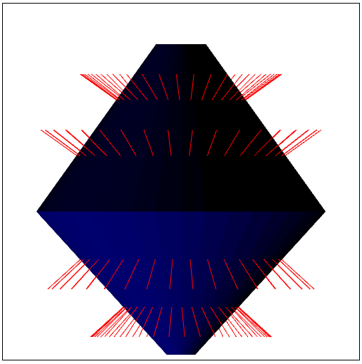

Name: Mackenzie Glynn
Login ID: mglynn
ASN#: Lab 2
Date: 10/15/2016
Implemented:
- Color of each face is calculated based on the lighting direction and the normal direction
- Normal vectors are drawn in red
- Faces render their corresponding color
- Pass color information (calculated on the CPU) to the GPU
- Use a transformation matrix in the Vertex Shader
- Assignment
Screenshot:
